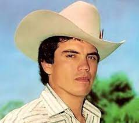

"Un dia voy pa arriba, y nada me importa el dia en que muera yo"
Tribute:
"Chalino Sanchez was a Narco-Legend. He was a legend in the world of drugs.
About Chalino Sánchez: Gaining popularity after his death, Chalino Sánchez was a Mexican singer and songwriter.
Born in Culiacan, Mexico, Chalino was known for his regional Mexican music and also his performances of corridos. Chalino Sánchez had a difficult life and a poor childhood.
Chalino Sánchez was originally named Rosalino Sánchez Felix. He wanted to become a singer from a very young age. Chalino Sánchez rose to fame by making music on narcocorridos that celebrated Mexico's culture of cartels.
Keep reading to know how Chalino made his way to become famous and gained his net worth, even after his death.
What is Chalino Sánchez’s net worth?: Chalino Sánchez had a massive net worth of about $6 million.
How much does Chalino Sánchez earn per year?: The average annual income of Chalino Sánchez is unknown.
How tall was Chalino Sánchez?: Chalino Sánchez was 5 ft 3 in (160 cm) tall.
How old was Chalino Sánchez?: Born on August 30, 1960, Chalino Sánchez was 31 years old when he died on May 16, 1992.
Childhood And Education: As Rosalino Sánchez Felix, Chalino Sánchez was born on a small ranch named Las Flechas in Mexico to parents Santos Sánchez and Senorina Felix. He had seven siblings and led a relatively poor lifestyle. Information about his education is unavailable.
Who is Chalino Sánchez’s partner?: Chalino Sánchez met Marisela Vallejos and the duo got married in 1984. They had two children, a son, Adan Sánchez, and a daughter, Cynthia Sánchez. They were married until Sánchez's death. His son Adan Sánchez died in a car accident in 2004.
Career And Professional Highlights: In 1989, Chalino Sánchez made his debut with the song '17 Exitos'. After his brother Armando was killed, Chalino Sánchez was arrested for minor crimes and he made his first corrido, or ballad, in his brother's memory.
While serving his time, Chalino Sánchez composed many songs based on the life of the inmates. He soon found the recording studio named San Angel Records on Olympic Boulevard in Los Angeles, California. His first cassette of songs was released in 1989. Around this time, he met Pedro Rivera, an immigrant from Mexico, and founded their recording studio in Long Beach, California. The studio was named Cintas Acuario.
Singer Chalino Sánchez, along with singer Rivera started their narcocorrido recordings in Cintas Acuario. During his performance at Coachella in 1992, a local man shot Chalino Sánchez in front of a crowd of over 400 people. Around seven people were hit, but the artist survived. After his performance at Coachella, he had a successful concert at Salon Bugambilias, Culiacán, Mexico.
Since his death, his fame and recordings have grown in popularity. Chalino still amasses millions of streams nearly 3 decades after his death and remains popular with young Hispanic listeners.